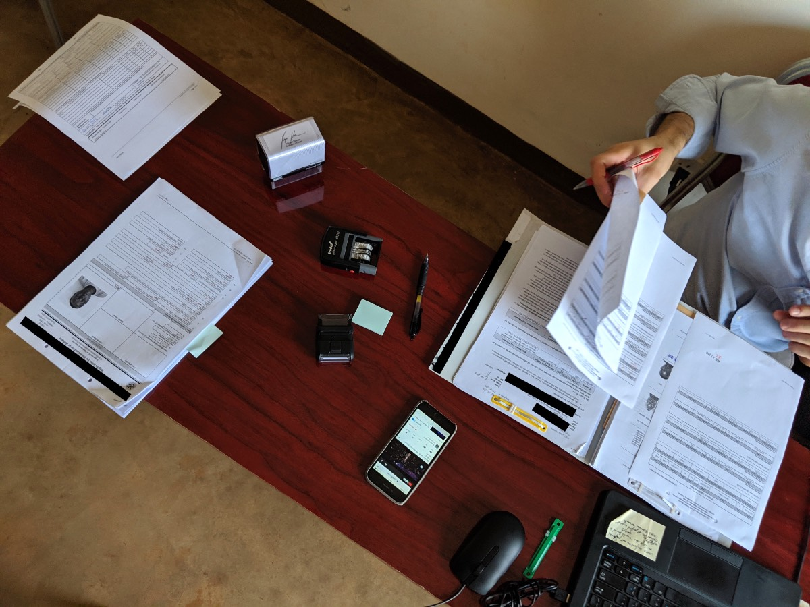

Global Asylum
My team at United States Citizenship and Immigration Services (USCIS) built a new refugee case management system. I was responsible for design, testing, and managing our team's work. Our goal was to save money and improve security by replacing a mainframe built in the 80s. One year later, we delivered a cloud system that saved over $10 million a year using user research and APIs.
